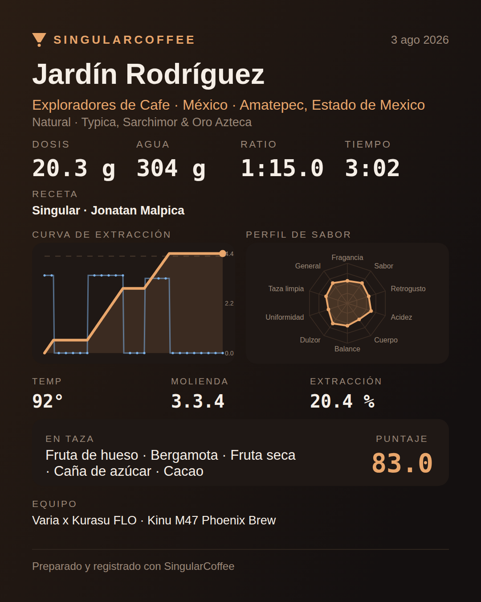
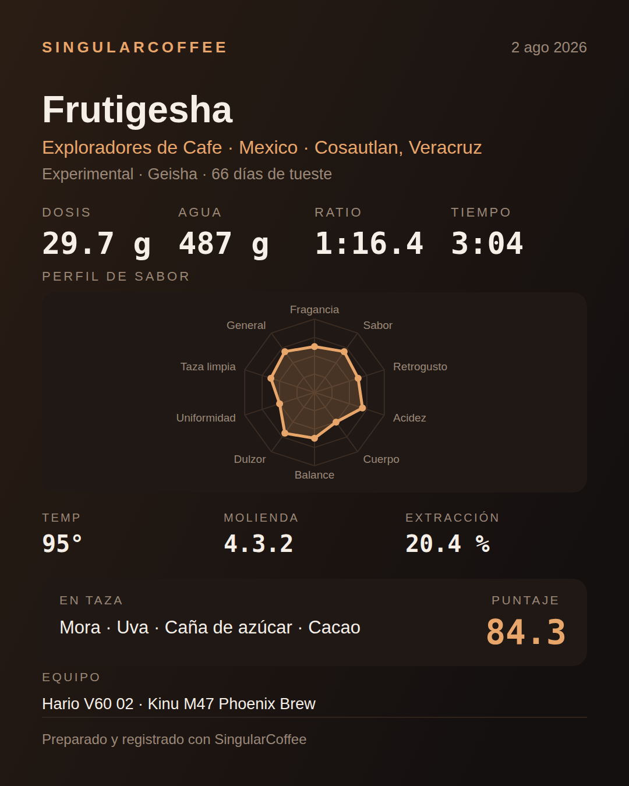

Café de especialidad en filtrado y espresso manual, en Android. Sigue tu vertido gramo a gramo desde la báscula, te dice tu rendimiento de extracción sin refractómetro, y saca una imagen del café que acabas de hacer lista para publicar.
En pruebas cerradas. Español e inglés. Todo vive en el teléfono.


Aquí está la diferencia. Casi todas las apps del gremio leen Acaia y, con suerte, una más. Si tienes una Felicita, una MyScale KP2048B o una Varia, llevas años escuchando cómprate una Acaia.
| Báscula | Se anuncia como | Notas |
|---|---|---|
| BOOKOO Themis, Themis Ultra | BOOKOO BK | La única que publica caudal y batería. |
| Acaia Lunar, Pearl, Pyxis, Cinco | ACAIA LUNAR PYXIS | Modelos antiguos y nuevos. |
| Timemore Black Mirror | Timemore Scale | |
| Timemore Dot | TIMEMORE_Dot | Protocolo distinto al de la Black Mirror. |
| MyScale KP2048B | MY_SCALE blackcoffee | La económica que se vende con varios nombres. |
| Felicita Arc | FELICITA | |
| Varia AKU, AKU Mini | VARIA AKU AKU SCALE | Publica cronómetro. |
| Decent Scale | Decent Scale | También EspressiScale. |
| Eureka Precisa | CFS-9002 LSJ-001 | |
| WeighMyBru | WeighMyBru | La abierta hecha con ESP32. |
Sin báscula funciona igual, con su propio cronómetro. Si tienes una que no está en la lista y su protocolo es público, dilo aquí.
Todo lo que se disolvió en la taza ya no está en el lecho. La diferencia entre lo que moliste y lo que queda al secarlo es la masa extraída:
Rendimiento = (dosis − poso seco) ÷ dosis × 100
Es el método con el que se calibran los refractómetros. Solo necesita la báscula que ya tienes: recoge el lecho, sécalo, pésalo frío y anótalo. La app hace el resto y te sitúa en la ventana de la SCA.
Verter es una operación de báscula. La guía te dice cuántos gramos faltan para cerrar el vertido en curso, y cuando toca remover o hacer swirl te lo enseña y avanza sola en cuanto vuelves a verter. Sin botones que pulsar con las manos ocupadas.
Un Kinu M47 se ajusta en 4.3.2 —cuatro vueltas y 3.2 marcas—, no
en un número suelto. La app guarda cada molino con su notación y lo escribe
como lo lees en el dial.
Flair completa, Cafelat Robot, ROK, Picopresso, 9Barista, La Pavoni. Un espresso ronda el 10 % de TDS y un filtrado el 1.3 %: con una sola ventana cualquier shot saldría marcado como «demasiado fuerte». Cada familia tiene la suya.
El catálogo es público y vive en este mismo repositorio. Cada receta lleva acreditado a quien la diseñó, y desde la app puedes aportar la tuya de un toque. Se actualiza sin necesidad de actualizar la app.
Está en pruebas cerradas con un grupo pequeño mientras se pule. Si quieres entrar cuando se abra, deja tu correo y te aviso — sin lista de novedades ni nada más.
Apuntarme a la listaDime qué báscula tienes: es lo que decide a quién puedo dar acceso primero.